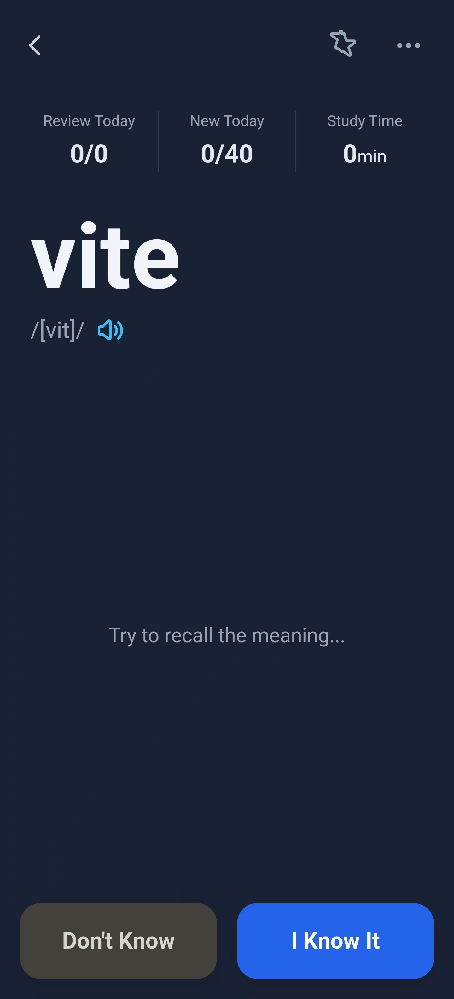
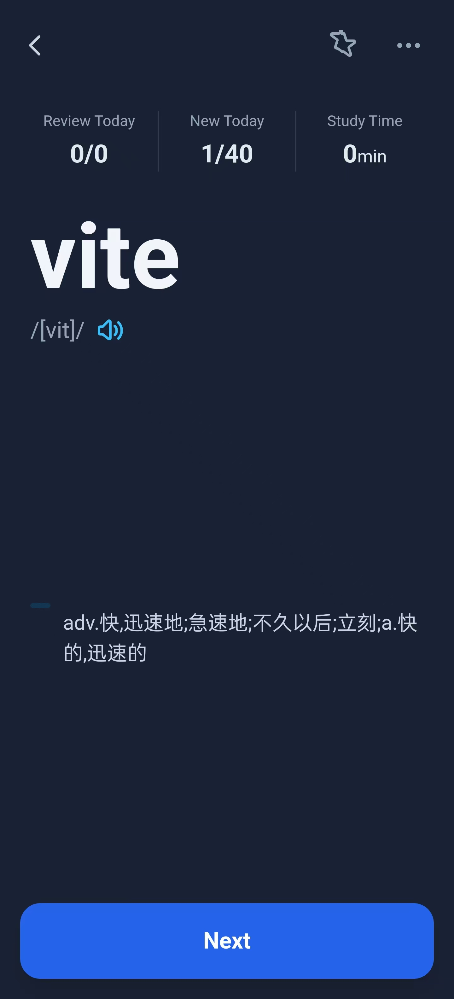
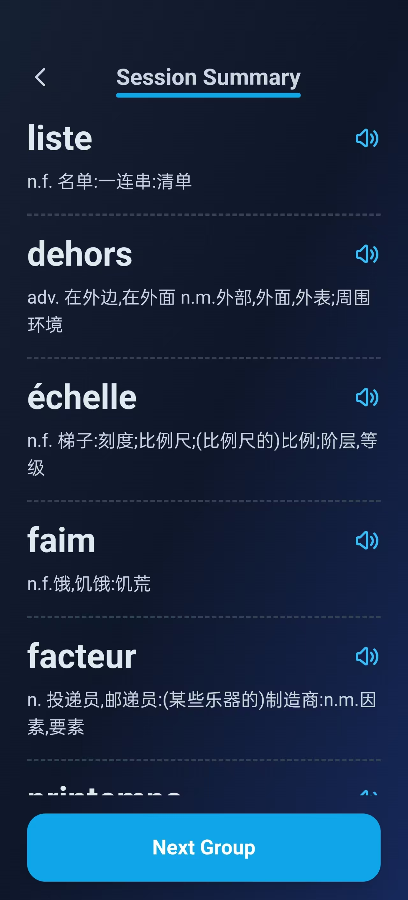
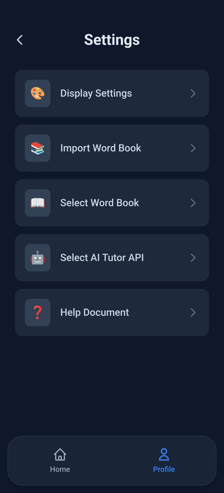
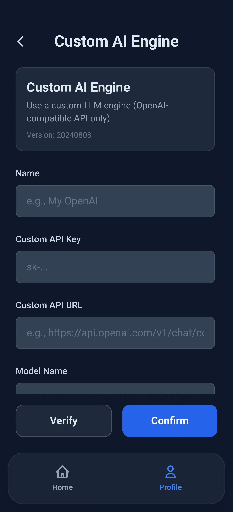
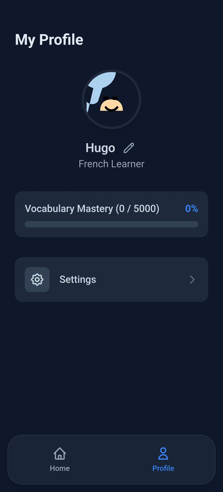

核心功能一览
每一个设计，都为了让你的学习更进一步。

主动回忆，告别假装“已记住”
我们采用“先想后看”的学习模式，强制大脑主动提取信息，从而激活深度记忆。这比被动浏览有效得多，确保你真正掌握每一个单词，而非仅仅是“眼熟”。

清晰详尽的单词卡片
每一个单词都配有清晰的音标、纯正的发音和全面的释义。点击喇叭即可跟读，助你掌握最地道的法语发音。

学习总结，让进步清晰可见
每次学习结束后，一份清晰的总结报告会呈现在你眼前。无论是新学单词还是复习情况，所有数据一目了然。看着自己的进步，学习自然更有动力。

你的App，由你定义
我们提供强大的自定义功能。你可以轻松导入自己的词书，选择不同的显示设置，打造最适合你个人学习习惯的专属工具。

接入你自己的AI引擎*
对于高阶用户，我们开放了自定义AI Tutor API接口。你可以接入自己的大语言模型服务，获得独一无二、完全由你掌控的智能学习体验。
* 该功能目前仍在开发中，敬请期待。

词汇掌握度，时刻追踪
在个人主页，直观的进度条会实时显示你的词汇掌握情况。设定一个5000词的目标？或是10000词？每一步的成长，我们都为你记录在案。